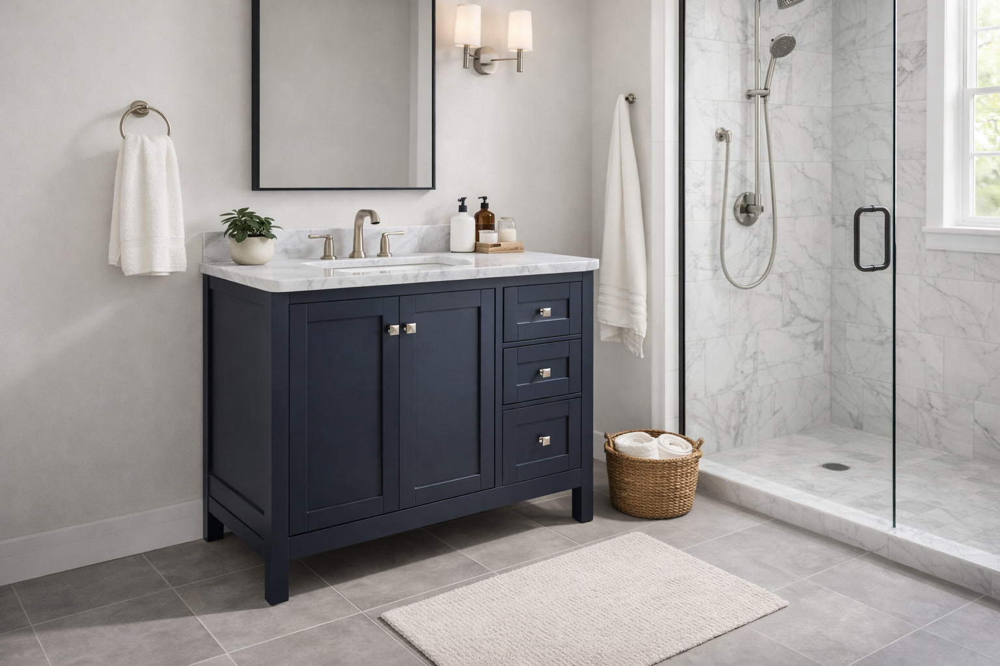
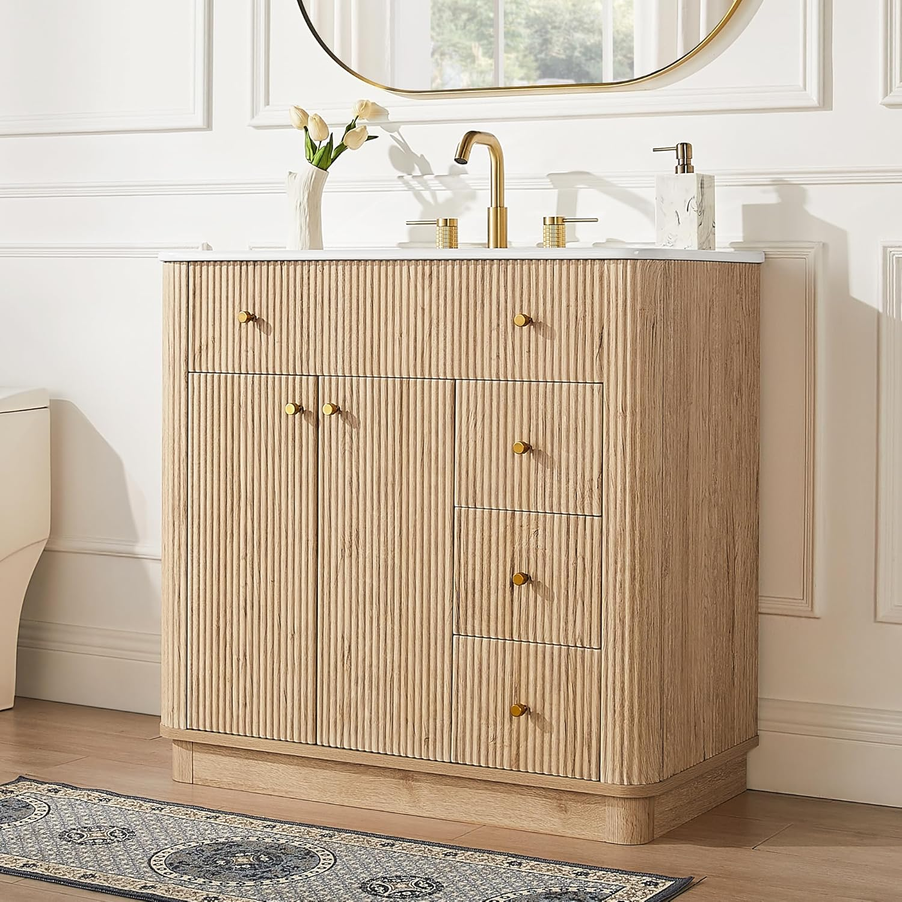
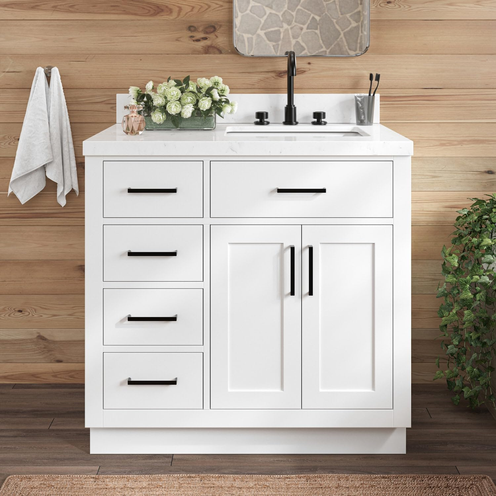
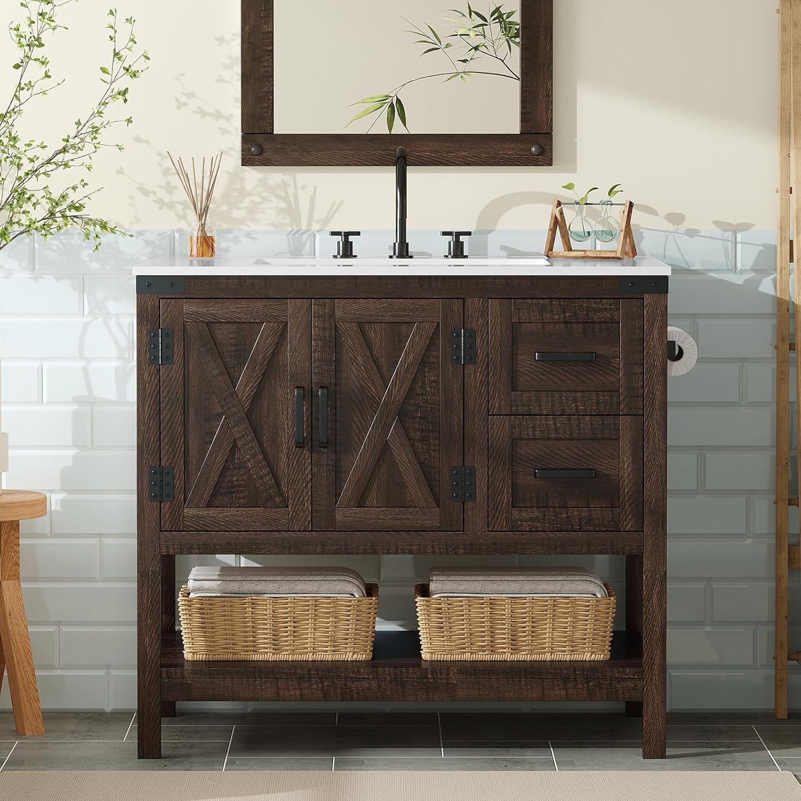
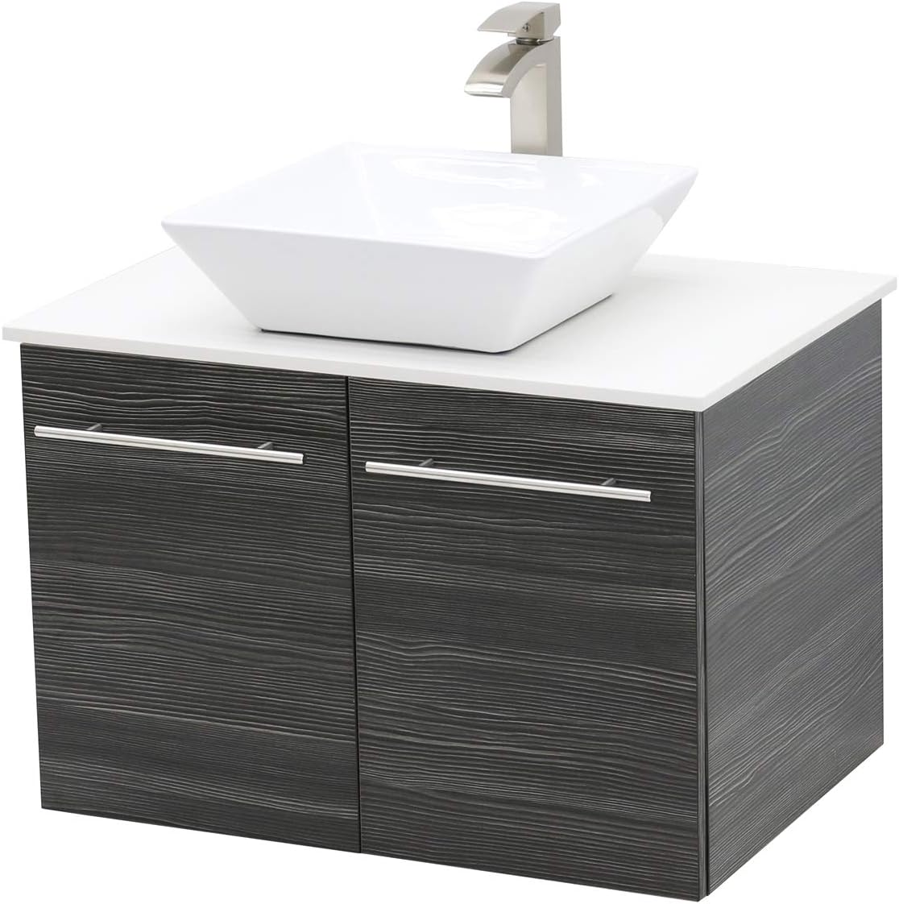
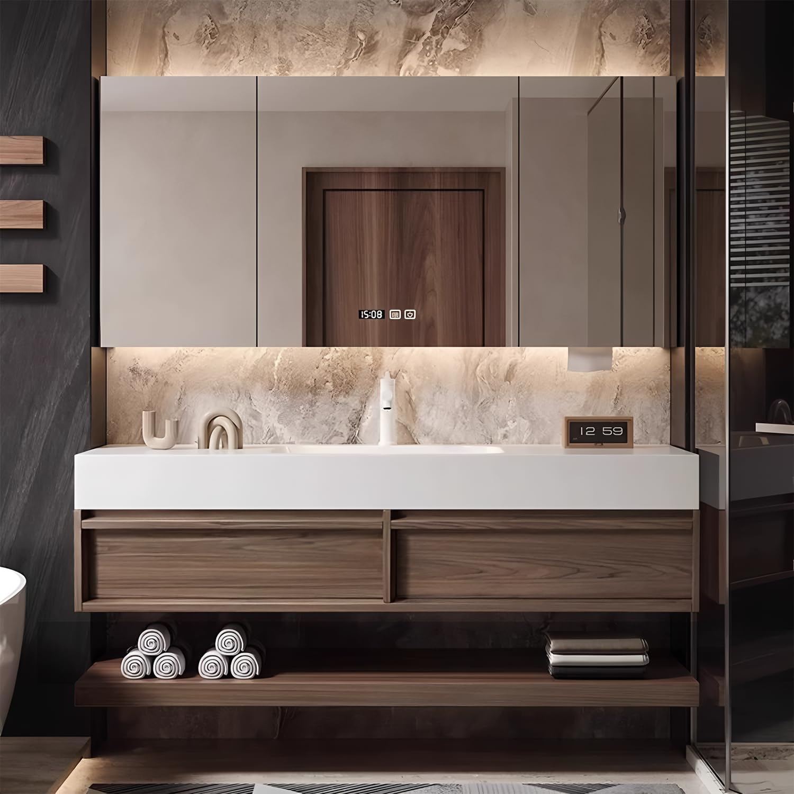

7 Best 36-Inch Bathroom Vanities for Every Style and Budget (2026)

Home & Bathroom Expert | Reviewing vanities and bathroom furniture since 2024
This article contains affiliate links. If you purchase through these links, we may earn a small commission at no extra cost to you. Full disclosure.
Quick Answer: Best 36-Inch Vanity?
The ARIEL Cambridge 36"
 ($1,115) is our top pick for its solid wood construction, quartz countertop, and 5 dovetail drawers that will last 20+ years. For budget buyers, the LIKIMIO 36"
($1,115) is our top pick for its solid wood construction, quartz countertop, and 5 dovetail drawers that will last 20+ years. For budget buyers, the LIKIMIO 36"

 ($287.99) delivers solid wood legs, a built-in towel holder, and modern storage at a fraction of the price.
($287.99) delivers solid wood legs, a built-in towel holder, and modern storage at a fraction of the price.

The 36-inch vanity is the sweet spot of bathroom design. It is wide enough for generous counter space and real storage, yet compact enough to fit standard bathrooms without overwhelming the room. That is exactly why it is the most popular single-sink vanity size sold in America.
We analyzed specifications, customer reviews, and build quality across 25+ vanities to find the 7 best 36-inch options for 2026. From premium solid wood models with Carrara quartz to budget-friendly modern designs, this guide covers every style and price point so you can find the perfect fit for your bathroom.
Whether you prefer a modern aesthetic, a farmhouse look, or a sleek floating design, the 36-inch format gives you options that smaller sizes simply cannot match. Not sure which style suits your space? Start with our complete buying guide.
Our picks range from $287.99 to $1,115, covering solid wood, MDF, freestanding, wall-mounted, and barn door styles. Every vanity includes a sink and countertop.

ARIEL Cambridge 36" Solid Wood Quartz
Premium solid wood construction with quartz countertop, 5 dovetail drawers, and soft-close hardware. Built to last 20+ years in high-humidity bathrooms.
Check Price on AmazonWhy Choose a 36-Inch Vanity?
The 36-inch vanity hits a perfect balance that smaller and larger sizes miss. Here is why it dominates bathroom renovations:
- Optimal counter space: Enough room for soap dispensers, toothbrush holders, and daily essentials without feeling cramped -- roughly 50% more surface area than a 24-inch model
- Real storage: Most 36-inch vanities fit 2-3 drawers plus a cabinet, compared to 1 drawer or just a cabinet door on smaller sizes
- Standard plumbing fit: Drain and supply lines in most American bathrooms are centered at 36 inches, so installation is straightforward with no pipe relocation
- Resale value: Real estate agents consistently report that a quality 36-inch vanity is one of the top 5 bathroom upgrades that increase home value
- Universal compatibility: Fits standard full bathrooms (minimum 5x8 feet), guest baths, and even compact master bathrooms
How We Evaluated
We scored each vanity across five weighted criteria to ensure our picks deliver real value:
- Build Quality & Materials (30%): Solid wood vs MDF vs particle board, moisture resistance, drawer construction (dovetail vs stapled), overall durability
- Countertop Quality (20%): Material (quartz, ceramic, marble), stain resistance, scratch resistance, and thickness
- Storage & Function (20%): Number of drawers and cabinets, soft-close mechanisms, interior organization, towel storage
- Design & Style (15%): Aesthetic appeal, hardware quality, finish options, and how well it fits current design trends
- Value (15%): Price relative to materials, what is included (sink, faucet, hardware), and warranty coverage
Top 7 Best 36-Inch Bathroom Vanities
1. ARIEL Cambridge 36" Solid Wood Quartz Vanity
Best For: Homeowners who want a vanity that lasts 20+ years
Pros
- 100% solid wood construction
- Quartz countertop (stain-proof)
- 5 dovetail drawers
- Soft-close on everything
Cons
- Premium price point
- Heavy (shipping ~130 lbs)
The ARIEL Cambridge is the gold standard of 36-inch vanities. Every joint is dovetailed -- the same technique used in fine furniture -- meaning drawers will not loosen or wobble even after years of daily use. The quartz countertop is completely non-porous, so toothpaste, makeup, and hair products wipe away without staining.
With 5 full drawers plus a cabinet, you get more organized storage than any other vanity on this list. The solid wood frame handles bathroom humidity without swelling or warping, which is where cheaper MDF vanities fail within 3-5 years. If you are renovating once and want it done right, this is the vanity to buy.
Check Price on Amazon
2. T4TREAM 36" Modern Fluted Single Vanity
Best For: Trend-forward bathrooms with a modern aesthetic
Pros
- On-trend fluted cabinet front
- Quartz countertop included
- Soft-close drawers
- Natural oak finish
Cons
- New product (limited reviews)
- MDF construction
The T4TREAM brings the biggest bathroom design trend of 2026 -- fluted vertical grooves -- into the 36-inch format at a remarkably accessible price. The textured cabinet front creates visual depth that flat-panel vanities simply cannot match, making your bathroom look like it was designed by an interior decorator.
The included quartz countertop is a genuine surprise at this price. Most vanities under $400 come with ceramic basins, but T4TREAM includes the same stain-proof, scratch-resistant quartz you find on vanities costing twice as much. The natural oak finish pairs beautifully with matte black fixtures, white tile, and concrete accents.
Check Price on Amazon

3. LIKIMIO 36" Vanity with Towel Holder & Solid Wood Legs
Best For: Budget buyers who still want solid wood and smart design
Pros
- Lowest price for 36-inch quality
- Built-in towel holder
- Adjustable solid wood legs
- Modern black finish
Cons
- Very new (limited reviews)
- Single color option
The LIKIMIO is the best value 36-inch vanity we found. At under $290, it undercuts the competition while including features you normally pay more for: adjustable solid wood legs (not metal or plastic), a built-in side towel holder that eliminates the need for a separate towel bar, and a clean modern cabinet design.
The adjustable legs are a standout feature. Bathroom floors are rarely perfectly level, and most budget vanities wobble or require shimming. The LIKIMIO lets you dial in the height on each leg independently, guaranteeing a rock-solid, level installation every time. For renters or first-time homeowners looking at vanities under $500, this is the smartest buy on this list.
Check Price on Amazon
4. ARIEL Hepburn 36" Carrara White Quartz Vanity
Best For: Elegant master bathrooms with a classic-meets-modern look
Pros
- Carrara white quartz countertop
- Solid wood construction
- Highest rating (4.9/5)
- Timeless shaker-style design
Cons
- Premium price
- White finish shows dust easily
The ARIEL Hepburn is the most beautiful vanity in this roundup. Its Carrara white quartz countertop mimics the look of Italian marble -- the soft grey veining against a white background -- but without any of marble's maintenance headaches. No sealing, no staining, no etching from acidic products. It looks like marble but performs like quartz.
Like its Cambridge sibling, the Hepburn is built from solid wood with dovetail drawer joints. But the design language is different: where the Cambridge is utilitarian, the Hepburn leans transitional with its shaker-style doors and elegant proportions. At $1,050, it is actually $65 less than the Cambridge while delivering arguably more visual impact. Pair it with brushed nickel or chrome hardware for a timeless master bathroom upgrade.
Check Price on Amazon

5. AMERLIFE 36" Farmhouse Barn Door Vanity
Best For: Farmhouse and rustic-style bathroom renovations
Pros
- Authentic sliding barn door
- Rustic brown wood grain finish
- Solid construction at mid price
- Interior shelf for organization
Cons
- Barn door requires clearance
- MDF (not solid wood)
If your bathroom has shiplap walls, mason jar accessories, or reclaimed wood accents, the AMERLIFE barn door vanity will look right at home. The sliding barn door is functional, not decorative -- it glides smoothly on a metal rail and tucks completely to one side, revealing an interior shelf and full cabinet space behind it.
The rustic brown finish has realistic wood grain texture that photographs beautifully and looks convincing in person. At $330, it costs less than most farmhouse vanities that rely on basic shaker doors to suggest the style. This one commits fully with the barn door hardware. Check our farmhouse vanity guide for more rustic options.
Check Price on Amazon
6. WindBay 36" Wall Mount Floating Vanity
Best For: Floating vanity fans who want a full 36-inch size
Pros
- Wall-mounted (easy floor cleaning)
- Most reviews on this list (150)
- Dark grey modern finish
- Proven track record
Cons
- Requires stud mounting
- Professional install recommended
The WindBay is the most battle-tested floating vanity in the 36-inch category, with 150 customer reviews confirming its quality and durability. Wall-mounted floating vanities create a visual illusion of more floor space -- your bathroom will feel larger than it actually is. They also make mopping and cleaning underneath effortless, which is a real practical advantage in high-traffic bathrooms.
The dark grey finish is sophisticated without being dramatic. It pairs well with white walls, marble tile, and both chrome and matte black fixtures. At $499, the WindBay sits in the mid-range and delivers excellent build quality for a floating unit. The mounting hardware is included, but we recommend professional installation or having a handy friend help -- you need to hit wall studs to support the 80+ pound loaded weight.
Check Price on Amazon
7. 36" Floating Vanity with Smart Mirror (Slate Black)
Best For: Tech-forward bathrooms that want vanity + mirror in one purchase
Pros
- Includes smart LED mirror
- Floating wall-mounted design
- Slate black walnut finish
- Anti-fog mirror technology
Cons
- Requires electrical for mirror
- More complex installation
This is the most forward-thinking vanity on our list. Instead of buying a vanity and mirror separately -- and hoping they match -- this unit bundles both into a cohesive design package. The LED smart mirror includes anti-fog technology, adjustable color temperature, and touch controls, eliminating the need for a separate mirror purchase that typically costs $150-$300 on its own.
The slate black walnut finish is unique in the 36-inch market. Most vanities come in white, grey, or natural wood -- this dark, warm tone stands out without being overpowering. The floating mount keeps the modern, airy feel. Factor in the mirror savings and the effective vanity cost drops to roughly $350-$450, making it competitive with mid-range standalone vanities. Note that the mirror requires an electrical outlet behind it, so plan your installation accordingly.
Check Price on AmazonComparison Table
| Product | Style | Material | Rating | Price |
|---|---|---|---|---|
| ARIEL Cambridge | Traditional | Solid Wood + Quartz | 4.8/5 | $1,115 |
| T4TREAM Fluted | Modern Fluted | MDF + Quartz | 5.0/5 | $360 |
| LIKIMIO | Modern | Wood Legs + Cabinet | 5.0/5 | $288 |
| ARIEL Hepburn | Transitional | Solid Wood + Carrara Quartz | 4.9/5 | $1,050 |
| AMERLIFE Farmhouse | Barn Door | MDF + Ceramic | 4.3/5 | $330 |
| WindBay Floating | Wall-Mount | Plywood + Ceramic | 4.4/5 | $499 |
| Smart Mirror Floating | Wall-Mount + Mirror | MDF + Ceramic | 4.2/5 | $599 |
Buying Guide: Choosing Your 36-Inch Vanity
Style Guide: Which Design Fits Your Bathroom?
- Traditional / Transitional: ARIEL Cambridge or Hepburn. Shaker doors, detailed hardware, pairs with marble tile and traditional fixtures. Timeless look that never goes out of style.
- Modern / Contemporary: T4TREAM or LIKIMIO. Fluted fronts, clean lines, minimal hardware. Pairs with matte black fixtures, concrete tile, and frameless mirrors. See more in our modern vanity guide.
- Farmhouse / Rustic: AMERLIFE. Barn door, wood grain textures, industrial hardware. Pairs with shiplap, vessel sinks, and oil-rubbed bronze fixtures. Explore all options in our farmhouse guide.
- Floating / Minimalist: WindBay or Smart Mirror. Wall-mounted for visual space, clean underneath. Pairs with linear tile, LED mirrors, and waterfall faucets. Full selection in our floating vanity guide.
Material Comparison for 36-Inch Vanities
- Solid wood (birch/poplar): 15-20+ years. Best for humid bathrooms with showers. ARIEL Cambridge and Hepburn use this.
- Plywood: 12-15 years. Excellent moisture resistance at lower cost. WindBay uses marine-grade plywood.
- MDF (sealed): 8-12 years. Good for guest baths and powder rooms. T4TREAM, AMERLIFE, and LIKIMIO use this.
- Particle board: 3-5 years. Avoid for any bathroom with a shower or tub.
Countertop Materials Explained
- Quartz (ARIEL Cambridge, T4TREAM): The best overall. Non-porous, never needs sealing, resists stains and scratches. Costs more but lasts indefinitely.
- Carrara White Quartz (ARIEL Hepburn): Engineered quartz with marble-look veining. All the beauty of marble, none of the maintenance.
- Ceramic (AMERLIFE, LIKIMIO): Affordable, easy to clean, hygienic. Can chip on impact from dropped items. Best for budget-conscious buyers.
Storage Comparison
If organized storage is your priority, here is how our picks stack up:
- ARIEL Cambridge: 5 dovetail drawers + 1 cabinet (most storage)
- ARIEL Hepburn: Multiple drawers + cabinet with dovetail joints
- T4TREAM: 2 soft-close drawers + storage cabinet
- AMERLIFE: Barn door cabinet + interior shelf
- LIKIMIO: Cabinet storage + external towel holder
- WindBay: 2 drawers + open shelf
- Smart Mirror: Cabinet storage (compact floating format)
Installation Tips for 36-Inch Vanities
Freestanding Installation (Cambridge, T4TREAM, LIKIMIO, Hepburn, AMERLIFE)
- Check that your floor is level. Use the adjustable legs (LIKIMIO) or shims for other models.
- Mark and drill the wall anchor holes before sliding the vanity into position.
- Connect water supply lines first, then the drain. Use Teflon tape on all threaded connections.
- Apply a bead of silicone caulk where the countertop meets the wall to prevent water from dripping behind.
- Average DIY time: 2-3 hours with basic tools.
Wall-Mounted Installation (WindBay, Smart Mirror)
- Find your studs. A 36-inch floating vanity loaded with toiletries and water weighs 80-120 pounds. Drywall anchors alone will not hold it.
- Use a level and mark both mounting bracket positions before drilling. Even 1/8 inch off will be visible.
- Install the mounting brackets first, then hang the vanity cabinet. Have a second person support it while you align.
- For the Smart Mirror model, ensure an electrical outlet is roughed in behind the mirror location before tiling.
- Average install time: 3-5 hours. Professional installation recommended if you are not comfortable with stud work.
Frequently Asked Questions
Q: Is a 36-inch vanity big enough for a bathroom?
Yes. A 36-inch vanity is the most popular single-sink size in America. It provides ample counter space and storage for standard full bathrooms, guest baths, and even smaller master bathrooms. You need at least 40 inches of wall space to allow 2 inches of clearance on each side.
Q: What countertop material is best for a 36-inch vanity?
Quartz is the best overall countertop. It is non-porous, stain-proof, scratch-resistant, and never needs sealing. Carrara white quartz (like on the ARIEL Hepburn) gives you a marble look without marble maintenance. Ceramic is the budget alternative -- easy to clean but can chip on impact.
Q: Can I install a 36-inch vanity myself?
Freestanding 36-inch vanities are straightforward DIY projects requiring basic tools and 2-4 hours. Wall-mounted floating vanities need stud-finding and proper anchoring, which is intermediate difficulty. Plumbing connections are the same for both types. See our buying guide for detailed installation advice.
Q: How much should I spend on a 36-inch bathroom vanity?
Budget 36-inch vanities with ceramic sinks run $250-$350 (LIKIMIO, AMERLIFE). Mid-range options with quartz countertops cost $350-$600 (T4TREAM, WindBay). Premium solid wood vanities with Carrara quartz range from $800-$1,200 (ARIEL models). Spending more gets you better materials, soft-close hardware, and dovetail drawer construction.
Q: What is the difference between solid wood and MDF vanities?
Solid wood vanities (birch, poplar) resist moisture better, last 15-20+ years, and feel more substantial. MDF vanities cost 30-50% less, look identical when painted, and last 8-12 years in normal humidity. For bathrooms with showers or tubs, solid wood or plywood is recommended. For powder rooms and guest baths, quality MDF is perfectly fine.
Final Verdict
The 36-inch vanity is the workhorse of bathroom design -- big enough for real storage and counter space, compact enough for most bathrooms. Here are our top recommendations by use case:
- Best Overall: ARIEL Cambridge -- solid wood, quartz, 5 dovetail drawers. Buy once, never replace.
- Best Value: LIKIMIO 36" -- solid wood legs, towel holder, modern design at just $288.
- Best Modern: T4TREAM Fluted -- 2026's hottest design trend with quartz at $360.
- Best Premium: ARIEL Hepburn -- Carrara quartz beauty at $1,050.
- Best Farmhouse: AMERLIFE Barn Door -- authentic rustic charm at $330.
- Best Floating: WindBay 36" -- proven wall-mount with 150 reviews at $499.
For most buyers renovating a standard bathroom, the ARIEL Cambridge is the safest investment. Its solid wood construction and dovetail drawers mean you will not be shopping for another vanity in 5 years. If budget is a concern, the LIKIMIO at $288 punches well above its price class with solid wood legs and a built-in towel holder. Also, accessorize with a premium soap dispenser on top. Also, pair with a wall-mounted towel warmer.
No matter which style you choose, a 36-inch vanity upgrade is one of the highest-impact, lowest-effort bathroom improvements you can make. Pair it with a matching vanity mirror and fixtures for a complete transformation.
Complete Your Bathroom Upgrade
Our network of expert review sites covers every bathroom essential: